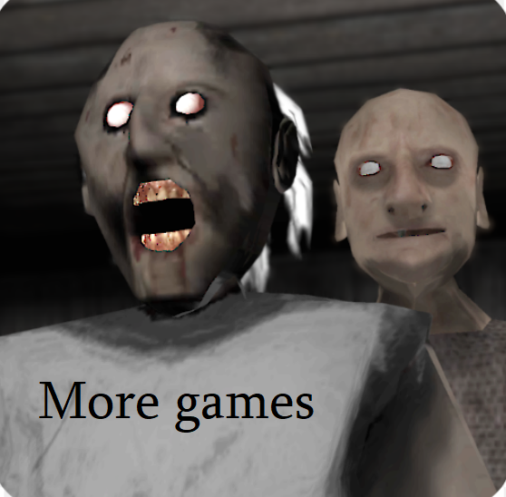

<!DOCTYPE html>
<html lang="en-us">
  <head>
    <meta charset="utf-8">
    <meta http-equiv="Content-Type" content="text/html; charset=utf-8">
    <title>Unity WebGL Player | Baldi's Fun New School Plus Ultimate Edition</title><link rel="canonical" href="https://granny.games/baldis-fun-new-school-plus-ultimate-edition/"/>

    <link rel="shortcut icon" href="favicon.ico">
    <link rel="stylesheet" href="style.css">
  </head>
  <body>
    <div id="unity-container" class="unity-desktop">
      <canvas id="unity-canvas" width=960 height=600></canvas>
      <div id="unity-loading-bar">
        <div id="unity-logo"></div>
        <div id="unity-progress-bar-empty">
          <div id="unity-progress-bar-full"></div>
        </div>
      </div>
      <div id="unity-warning"> </div>
      <div id="unity-footer">

      </div>
    </div>
    <script>
      var container = document.querySelector("#unity-container");
      var canvas = document.querySelector("#unity-canvas");
      var loadingBar = document.querySelector("#unity-loading-bar");
      var progressBarFull = document.querySelector("#unity-progress-bar-full");
      var fullscreenButton = document.querySelector("#unity-fullscreen-button");
      var warningBanner = document.querySelector("#unity-warning");

      // Shows a temporary message banner/ribbon for a few seconds, or
      // a permanent error message on top of the canvas if type=='error'.
      // If type=='warning', a yellow highlight color is used.
      // Modify or remove this function to customize the visually presented
      // way that non-critical warnings and error messages are presented to the
      // user.
      function unityShowBanner(msg, type) {
        
      }

      var buildUrl = "Build";
      var loaderUrl ="WebGL.loader.js";
      var config = {
        dataUrl:"WebGL.data",
        frameworkUrl:"WebGL.framework.js",
        codeUrl:"WebGL.wasm",
        streamingAssetsUrl: "StreamingAssets",
        companyName: "JohnsterSpaceGames",
        productName: "Baldi's Fun New School Plus Ultimate Edition",
        productVersion: "0.1.6b",
        showBanner: unityShowBanner,
      };

      // By default Unity keeps WebGL canvas render target size matched with
      // the DOM size of the canvas element (scaled by window.devicePixelRatio)
      // Set this to false if you want to decouple this synchronization from
      // happening inside the engine, and you would instead like to size up
      // the canvas DOM size and WebGL render target sizes yourself.
      // config.matchWebGLToCanvasSize = false;

      if (/iPhone|iPad|iPod|Android/i.test(navigator.userAgent)) {
        container.className = "unity-mobile";
        // Avoid draining fillrate performance on mobile devices,
        // and default/override low DPI mode on mobile browsers.
        config.devicePixelRatio = 1;
        unityShowBanner('WebGL builds are not supported on mobile devices.');
      } else {
        canvas.style.width = "960px";
        canvas.style.height = "600px";
      }
      canvas.style.background = "url('WebGL.jpg') center / cover";
      loadingBar.style.display = "block";

      var script = document.createElement("script");
      script.src = loaderUrl;
      script.onload = () => {
        createUnityInstance(canvas, config, (progress) => {
          progressBarFull.style.width = 100 * progress + "%";
        }).then((unityInstance) => {
          loadingBar.style.display = "none";
 
        }).catch((message) => {
          alert(message);
        });
      };
      document.body.appendChild(script);
    </script>
  </body>
</html>
<div class="floating" id="moreg" style="position:fixed; top: 30%; left: 0px; z-index: 10"><a target="_blank" href="https://granny.games/" title="Granny games"></a></div>